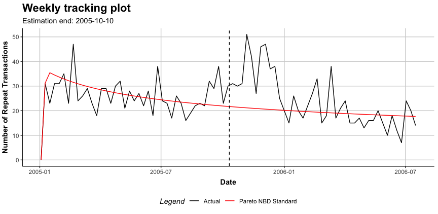

The CLVTools Package
Today, customer lifetime value (CLV) is the central metric for valuing customers. It describes the long-term economic value of customers and gives managers an idea of how customers will evolve over time. To model CLVs in continuous non-contractual business settings such as retailers, probabilistic customer attrition models are the preferred choice in literature and practice.
The R package CLVTools provides an efficient and easy to use implementation framework for probabilistic customer attrition models in non-contractual settings. Building up on the learnings of other implementations, the package adopts S4 classes to allow constructing rich and rather complex models that nevertheless still are easy to apply for the end user. The framework is capable to accommodate a variety of probabilistic customer attrition models for non-contractual settings in continuous and discrete time.
Currently, CLVTools implements the following probabilistic models:
1) Standard Pareto/NBD model (Schmittlein, Morrison & Colombo 1987)
2) Pareto/NBD model with time-invariant contextual factors (Fader & Hardie 2007)
3) Pareto/NBD model with time-varying contextual factors (Bachmann, Meierer & Näf 2020)
4) Standard BG/NBD model (Fader, Hardie, & Lee 2005)
5) BG/NBD model with time-invariant contextual factors (Fader & Hardie 2007)
6) Standard Gamma/Gompertz/NBD (Bemmaor & Glady 2012)
7) Gamma/Gompertz/NBD model with time-invariant contextual factors (Näf, Bachmann & Meierer 2020)
8) Gamma/Gamma model to estimate customer spending (Colombo & Jiang 1999; Fader, Hardie & Lee 2005; Fader & Hardie 2013)
In future versions of CLVTools the following models are added. See GitHub Issues for a time-line.
9) Standard BG/BB model (Fader, Hardie, & Shang 2010)
In addition the framework features a system of layers between the optimizer and the log-likelihood function to allow the flexible addition of model extensions during the model fitting process. Currently these layers include:
Correlation of the purchase and the attrition process
L2 regularization for parameters of contextual factors
Equality constraints between parameters of contextual factors for the purchase and the attrition process.
Installation
Install the most recent stable release from CRAN:
Install the development version from GitHub (using the devtools package):
To compile the package from source, please be advised that CLVTools relies on an external C++ library called GSL. This library has to be installed on your computer to be able to compile CLVTools from source. Follow these 3 steps:
Update to the latest version of R.
Install the external dependency (
GSL):
-
For Linux:
If you are using an R Docker container with Linux (e.g. rocker/tidyverse), you can build up on these Docker images as follows
Alternatively, follow the instruction in the section “Installing Dependencies external to the R system” at https://ropenscilabs.github.io/r-docker-tutorial/03-install-packages.html to install
GSLin a running Docker container with Linux. -
For Mac:
-
For Windows:
First, installRToolsthrough https://cran.r-project.org/bin/windows/Rtools/ (> v4.0). Next, use the newRToolspackage manager to install theGSLlibrary (see https://github.com/r-windows/docs/blob/master/rtools40.md#readme) by usingpacmanthrough theRTools Bash:
- Install the development version from source:
A Minimal Example
For detailed instructions and all available options and model variations see the detailed walkthrough and the manual.
Start by loading the package:
As Input data CLVTools requires customers’ transaction history. Every transaction record consists of a purchase date and customer ID.
data("apparelTrans") apparelTrans #> Id Date Price #> 1: 1 2005-01-03 230.30 #> 2: 10 2005-01-03 84.39 #> 3: 10 2005-02-25 131.07 #> 4: 10 2005-04-05 86.43 #> 5: 100 2005-01-03 11.49 #> --- #> 2349: 1221 2006-01-23 26.57 #> 2350: 1221 2006-03-09 129.82 #> 2351: 1221 2006-05-14 14.37 #> 2352: 1222 2005-01-03 44.77 #> 2353: 1222 2005-03-03 99.21
Before we estimate a model, we are required to initialize a data object using the clvdata() command. The data object contains the prepared transactional data and is later used as input for model fitting. Additionally we specify options for the date and time units, estimation duration and variable names (see Walkthrough for details). Make sure to store the generated object in a variable, e.g. in our example clv.apparel.
clv.apparel <- clvdata(apparelTrans, date.format="ymd", time.unit = "week", estimation.split = 40, name.id = "Id", name.date = "Date", name.price = "Price")
Be aware that probabilistic models such as the ones implemented in CLVTools are usually applied to specific customer cohorts. That means, you analyze customer that have joined your company at the same time (usually same day, week, month, or quarter). For more information on cohort analysis, see also here. Consequently, the data apparelTrans in this example is not the full transaction records of a fashion retailer, but rather only the customer cohort of 250 customers purchasing for the first time at this business on the day of 2005-01-03.
As a first probabilistic latent attrition model we estimate the standard Pareto/NBD model and therefore, use the command pnbd() to fit the model and estimate model parameters. Other models such as the BG/NBD model (bgnbd()) and the GGomp/NBD (ggomnbd()) are also available.
est.pnbd <- pnbd(clv.data = clv.apparel) #> Starting estimation... #> Estimation finished! est.pnbd #> Pareto NBD Standard Model #> #> Call: #> pnbd(clv.data = clv.apparel) #> #> Coefficients: #> r alpha s beta #> 0.7866 5.3349 0.3570 11.6152 #> KKT1: TRUE #> KKT2: TRUE #> #> Used Options: #> Correlation: FALSE
You can always use summary() to get details on CLVTools object (also before they are estimated):
#Full detailed summary of the parameter estimates summary(est.pnbd) #> Pareto NBD Standard Model #> #> Call: #> pnbd(clv.data = clv.apparel) #> #> Fitting period: #> Estimation start 2005-01-03 #> Estimation end 2005-10-10 #> Estimation length 40.0000 Weeks #> #> Coefficients: #> Estimate Std. Error z-val Pr(>|z|) #> r 0.7866 0.1324 5.942 2.81e-09 *** #> alpha 5.3349 0.9027 5.910 3.42e-09 *** #> s 0.3570 0.1838 1.943 0.0521 . #> beta 11.6152 10.6598 1.090 0.2759 #> --- #> Signif. codes: 0 '***' 0.001 '**' 0.01 '*' 0.05 '.' 0.1 ' ' 1 #> #> Optimization info: #> LL -2879.4699 #> AIC 5766.9399 #> BIC 5781.0257 #> KKT 1 TRUE #> KKT 2 TRUE #> fevals 23.0000 #> Method L-BFGS-B #> #> Used Options: #> Correlation FALSE
Once the model parameters are estimated, we are able to predict future customer behavior on an individual level. To do so, we use predict() on the object with the estimated parameters (i.e. est.pnbd). In general, probabilistic customer attrition model predict three expected characteristics for every customer:
- “conditional expected transactions” (CET), which is the number of transactions to expect form a customer during the prediction period,
- “probability of a customer being alive” (PAlive) at the end of the estimation period and
- “discounted expected residual transactions” (DERT) for every customer, which is the total number of transactions for the residual lifetime of a customer discounted to the end of the estimation period.
If spending information was provided when initializing the clvdata-object, also “customer lifetime value” (CLV) is predicted.
results <- predict(est.pnbd) #> Predicting from 2005-10-11 until (incl.) 2006-07-16 (39.86 Weeks). #> Estimating gg model to predict spending... #> Starting estimation... #> Estimation finished! print(results) #> Id period.first period.last period.length actual.x actual.total.spending #> 1: 1 2005-10-11 2006-07-16 39.85714 0 0.00 #> 2: 10 2005-10-11 2006-07-16 39.85714 0 0.00 #> 3: 100 2005-10-11 2006-07-16 39.85714 23 737.53 #> 4: 1000 2005-10-11 2006-07-16 39.85714 23 1069.91 #> 5: 1001 2005-10-11 2006-07-16 39.85714 11 364.00 #> --- #> 246: 1219 2005-10-11 2006-07-16 39.85714 14 413.76 #> 247: 122 2005-10-11 2006-07-16 39.85714 0 0.00 #> 248: 1220 2005-10-11 2006-07-16 39.85714 0 0.00 #> 249: 1221 2005-10-11 2006-07-16 39.85714 9 302.65 #> 250: 1222 2005-10-11 2006-07-16 39.85714 0 0.00 #> PAlive CET DERT predicted.mean.spending predicted.CLV #> 1: 0.3571791 0.2212506 0.05848859 39.95483 2.336902 #> 2: 0.4225636 0.9272819 0.24513121 55.23031 13.538672 #> 3: 0.9155479 13.5448630 3.58064629 43.57390 156.022721 #> 4: 0.9967780 13.1766970 3.48331993 41.60921 144.938180 #> 5: 0.5098134 3.5275846 0.93253307 45.58153 42.506281 #> --- #> 246: 0.9579241 3.6108002 0.95453149 33.58728 32.060115 #> 247: 0.3571791 0.2212506 0.05848859 39.95483 2.336902 #> 248: 0.3571791 0.2212506 0.05848859 39.95483 2.336902 #> 249: 0.9434302 4.2991096 1.13648922 34.28958 38.969738 #> 250: 0.4136156 0.5819279 0.15383529 47.35500 7.284870
clvdata objects may be plotted using the plot() command. Similar to summary(), the output of plot() adapts to the current modeling step.
plot(est.pnbd) #> Plotting from 2005-01-03 until 2006-07-16.

Contributions
Feedback and contributions to this package are welcome! Please use GitHub Issues for filing bug reports. Provide your contributions in the form of Pull Requests. See also these general guidelines to contribute to Open Source projects on GitHub.